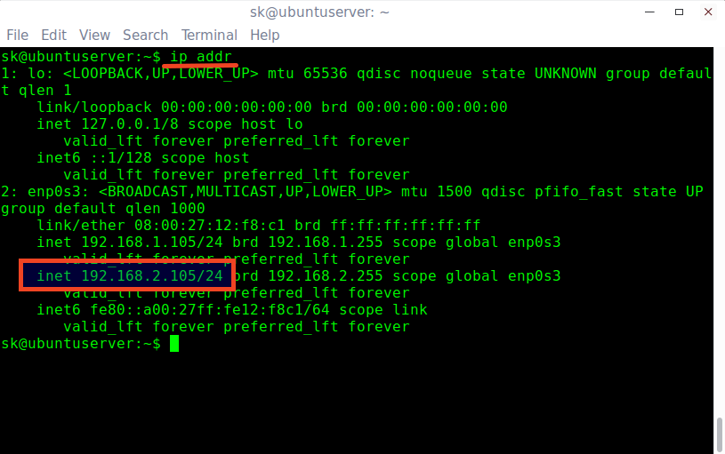
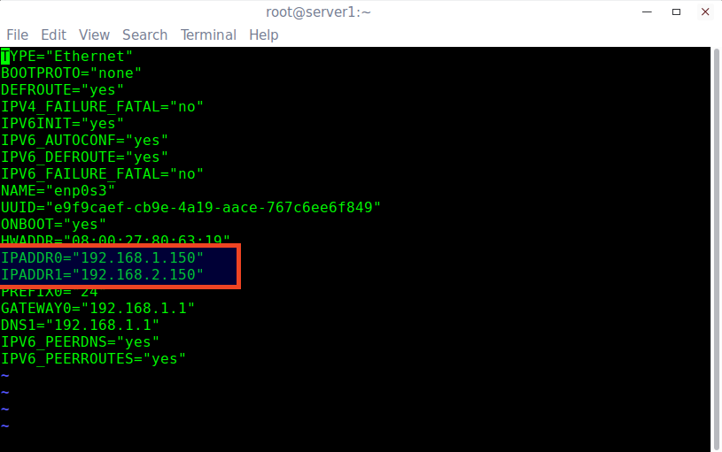
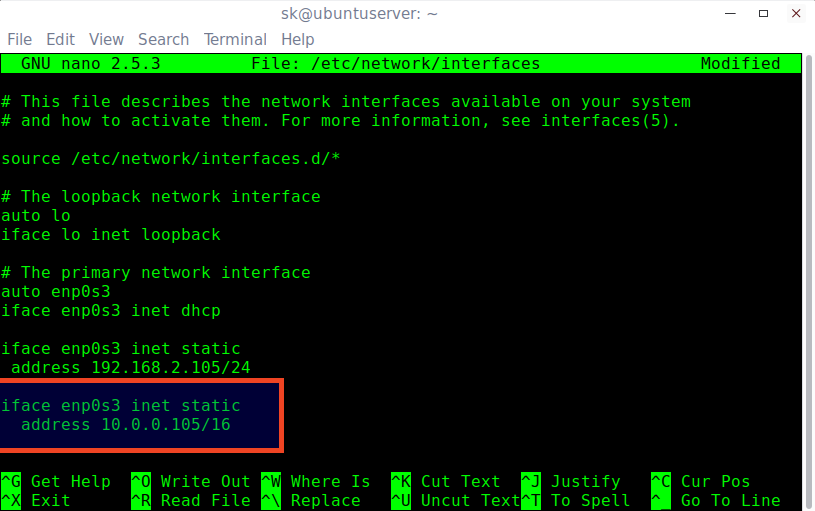
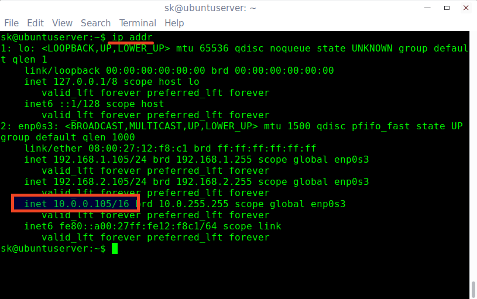
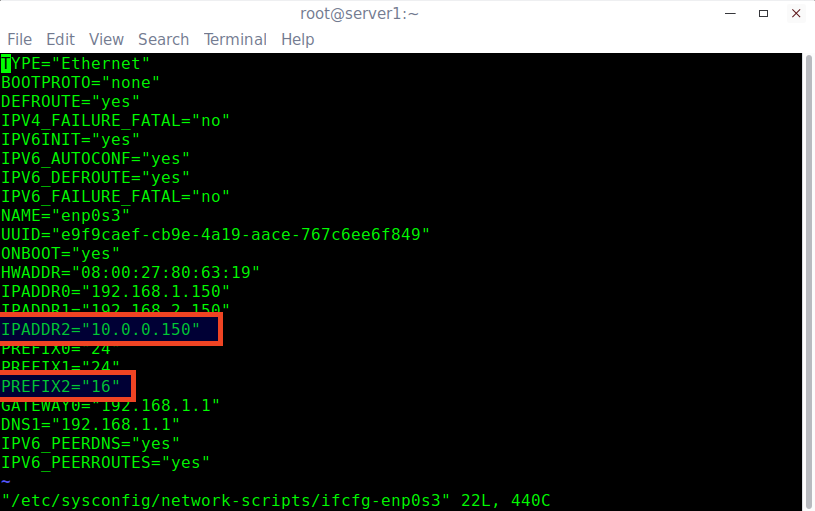

转载：How To Assign Multiple IP Addresses To Single Network Card In Linux
Some of you might wondering why would we assign multiple IP addresses to single Network card. There can be many reasons. Say for example, you are doing some testing on your Linux box that requires two or more network cards. Would you buy new one? No, It is not necessary! You can set multiple IP series, for example 192.168.1.0, 192.168.2.0, 192.168.3.0 etc., for a network card, and use all of them at the same time. Sounds useful? Of course, it is! This method might be helpful when setting up Internet sharing servers, like Squid proxy. I have done this for one of my client years ago. They had computer labs with different IP series in their network and only one Squid proxy server. So, I created multiple IP series in the squid proxy server, and shared the Internet to the different networks. If you ever been in a situation like this, just follow this guide.
Assign multiple IP addresses to single Network card in DEB based systems
I tested this guide on Ubuntu 16.04 LTS server edition. However, this will work on Debian and other DEB based systems such as Linux Mint, Elementary OS etc.
As you may know already, we can find the IP address in Ubuntu using command:
$ ifconfig
Or
$ ip addr
Sample output:
1: lo: <LOOPBACK,UP,LOWER_UP> mtu 65536 qdisc noqueue state UNKNOWN group default qlen 1
link/loopback 00:00:00:00:00:00 brd 00:00:00:00:00:00
inet 127.0.0.1/8 scope host lo
valid_lft forever preferred_lft forever
inet6 ::1/128 scope host
valid_lft forever preferred_lft forever
2: enp0s3: <BROADCAST,MULTICAST,UP,LOWER_UP> mtu 1500 qdisc pfifo_fast state UP group default qlen 1000
link/ether 08:00:27:12:f8:c1 brd ff:ff:ff:ff:ff:ff
inet 192.168.1.105/24 brd 192.168.1.255 scope global enp0s3
valid_lft forever preferred_lft forever
inet6 fe80::a00:27ff:fe12:f8c1/64 scope link
valid_lft forever preferred_lft forever
As you see above, the IP address of my network card enp0s3 is 192.168.1.105.
It is obvious that I have assigned class A type IP series i.e 192.168.1.0 to my network card. What If I need an different series, for example 192.168.2.0?
Just run the following command to set an extra IP.
$ sudo ip addr add 192.168.2.105/24 dev enp0s3
Here 24 indicates the netmask i.e 255.255.255.0.
Now, let us check if the new IP has been assigned or not.
$ ip addr
Sample output:
1: lo: <LOOPBACK,UP,LOWER_UP> mtu 65536 qdisc noqueue state UNKNOWN group default qlen 1
link/loopback 00:00:00:00:00:00 brd 00:00:00:00:00:00
inet 127.0.0.1/8 scope host lo
valid_lft forever preferred_lft forever
inet6 ::1/128 scope host
valid_lft forever preferred_lft forever
2: enp0s3: <BROADCAST,MULTICAST,UP,LOWER_UP> mtu 1500 qdisc pfifo_fast state UP group default qlen 1000
link/ether 08:00:27:12:f8:c1 brd ff:ff:ff:ff:ff:ff
inet 192.168.1.105/24 brd 192.168.1.255 scope global enp0s3
valid_lft forever preferred_lft forever
inet 192.168.2.105/24 scope global enp0s3
valid_lft forever preferred_lft forever
inet6 fe80::a00:27ff:fe12:f8c1/64 scope link
valid_lft forever preferred_lft forever
As you see in the above output, my network card has now two IP i.e 192.168.1.105 and 192.168.2.105. Similarly you can assign as many additional IPs as you like i.e 192.168.3.105, 192.168.4.105 etc.
Let us ping the new IP address:
$ sudo ping -c 3 192.168.2.105
Sample output:
PING 192.168.2.105 (192.168.2.105) 56(84) bytes of data.
64 bytes from 192.168.2.105: icmp_seq=1 ttl=64 time=0.040 ms
64 bytes from 192.168.2.105: icmp_seq=2 ttl=64 time=0.067 ms
64 bytes from 192.168.2.105: icmp_seq=3 ttl=64 time=0.066 ms
--- 192.168.2.105 ping statistics ---
3 packets transmitted, 3 received, 0% packet loss, time 2000ms
rtt min/avg/max/mdev = 0.040/0.057/0.067/0.015 ms
Congratulations! It’s working!!
Wait, I haven’t finished yet. What we have done so far is we assigned the new IP temporarily. After you reboot the system, the new IP will be gone. How do you make it permanently? It’s simple too.
Assign multiple IP addresses permanently:
Edit /etc/network/interfaces file:
$ sudo nano /etc/network/interfaces
Now, add the additional IP address as shown below:
iface enp0s3 inet static
address 192.168.2.105/24
Save and close the file.
Run the following command to take effect the saved changes.
$ sudo ifdown enp0s3 && sudo ifup enp0s3
Sample output:
Killed old client process
Internet Systems Consortium DHCP Client 4.3.3
Copyright 2004-2015 Internet Systems Consortium.
All rights reserved.
For info, please visit https://www.isc.org/software/dhcp/
Listening on LPF/enp0s3/08:00:27:12:f8:c1
Sending on LPF/enp0s3/08:00:27:12:f8:c1
Sending on Socket/fallback
DHCPRELEASE on enp0s3 to 192.168.1.1 port 67 (xid=0xe3877d4)
RTNETLINK answers: Cannot assign requested address
Internet Systems Consortium DHCP Client 4.3.3
Copyright 2004-2015 Internet Systems Consortium.
All rights reserved.
For info, please visit https://www.isc.org/software/dhcp/
Listening on LPF/enp0s3/08:00:27:12:f8:c1
Sending on LPF/enp0s3/08:00:27:12:f8:c1
Sending on Socket/fallback
DHCPDISCOVER on enp0s3 to 255.255.255.255 port 67 interval 3 (xid=0x3080e44d)
DHCPDISCOVER on enp0s3 to 255.255.255.255 port 67 interval 7 (xid=0x3080e44d)
DHCPREQUEST of 192.168.1.105 on enp0s3 to 255.255.255.255 port 67 (xid=0x4de48030)
DHCPOFFER of 192.168.1.105 from 192.168.1.1
DHCPACK of 192.168.1.105 from 192.168.1.1
bound to 192.168.1.105 -- renewal in 42937 seconds.
Now, let us run the following command to check whether the new IP address has been assigned or not.
$ ip addr
Sample output:

That’s it. Also, You can check after rebooting the system. You will see that the new IP is assigned permanently.
Assign multiple IP addresses to single Network card in RPM based systems
I tested this on CentOS 7 64 bit server edition. However, the same steps should work on other RPM based systems such as Fedora, Red hat Linux, and Scientific Linux.
Just run the following command to add an additional IP temporarily.
$ sudo ip addr add 192.168.2.150/24 dev enp0s3
You can start using the new IP right away.
To add IP address permanent, just Edit network card configuration file as root user:
# vi /etc/sysconfig/network-scripts/ifcfg-enp0s3
Add a new IP address as shown below.
IPADDR1="192.168.2.150"
For other IP address, add line “IPADDR2=”192.168.3.150”. You can add any number of IP addresses one by one.

Save and close the file.
Restart network service using command:
# systemctl restart network
Verify the new IP address using command:
# ip addr
Sample output:
1: lo: <LOOPBACK,UP,LOWER_UP> mtu 65536 qdisc noqueue state UNKNOWN
link/loopback 00:00:00:00:00:00 brd 00:00:00:00:00:00
inet 127.0.0.1/8 scope host lo
valid_lft forever preferred_lft forever
inet6 ::1/128 scope host
valid_lft forever preferred_lft forever
2: enp0s3: <BROADCAST,MULTICAST,UP,LOWER_UP> mtu 1500 qdisc pfifo_fast state UP qlen 1000
link/ether 08:00:27:80:63:19 brd ff:ff:ff:ff:ff:ff
inet 192.168.1.150/24 brd 192.168.1.255 scope global enp0s3
valid_lft forever preferred_lft forever
inet 192.168.2.150/24 brd 192.168.2.255 scope global enp0s3
valid_lft forever preferred_lft forever
inet6 fe80::a00:27ff:fe80:6319/64 scope link
valid_lft forever preferred_lft forever
Similarly, add as many IPs as you want.
Assign different class IP addresses
There are five classes of available IP ranges namely: Class A, Class B, Class C, Class D, and Class E. Class A, B, and C are commonly used.
| Class | Address Range | Supports |
|---|---|---|
| Class A | 1.0.0.1 to 126.255.255.254 | Supports 16 million hosts on each of 127 networks. |
| Class B | 128.1.0.1 to 191.255.255.254 | Supports 65,000 hosts on each of 16,000 networks. |
| Class C | 192.0.1.1 to 223.255.254.254 | Supports 254 hosts on each of 2 million networks. |
| Class D | 224.0.0.0 to 239.255.255.255 | Reserved for multicast groups. |
| Class E | 240.0.0.0 to 254.255.255.254 | Reserved for future use, or Research and Development Purposes. |
Source: http://www.computerhope.com/jargon/i/ip.htm
As you may noticed, I have been using Class A type addresses in this guide.
I want to assign a different class IP, for example class A (1.0.0.0 series). Is it possible? Of course, it is.
Just add the IP address of your choice in the network card config file.
Assign different class IP addresses in Ubuntu/Debian based systems:
In DEB based systems, edit /etc/network/interfaces file:
$ sudo nano /etc/network/interfaces
Add the IP address:
iface enp0s3 inet static
address 10.0.0.105/16

Save and close the file.
Run the following command to take effect the changes.
$ sudo ifdown enp0s3 && sudo ifup enp0s3
Check if the new IP has been added using command:
$ ip addr
Sample output:

Ping the new IP address with command:
$ sudo ping -c 3 10.0.0.105
Sample output:
PING 10.0.0.105 (10.0.0.105) 56(84) bytes of data.
64 bytes from 10.0.0.105: icmp_seq=1 ttl=64 time=0.042 ms
64 bytes from 10.0.0.105: icmp_seq=2 ttl=64 time=0.070 ms
64 bytes from 10.0.0.105: icmp_seq=3 ttl=64 time=0.055 ms
--- 10.0.0.105 ping statistics ---
3 packets transmitted, 3 received, 0% packet loss, time 2000ms
rtt min/avg/max/mdev = 0.042/0.055/0.070/0.014 ms
Like this way, we can add multiple IPs to single Network card in Ubuntu, Debian and derivatives like Linux Mint, and Elementary OS etc.
Assign different class IP addresses in CentOS/RHEL/Scientific Linux based systems:
Edit network card configuration file as root user:
# vi /etc/sysconfig/network-scripts/ifcfg-enp0s3
Add a new IP address as shown below. Please note that you must add correct prefix (netmask) for each class IP range.
Let us add a class A type IP. for example 10.0.0.150.
IPADDR2="10.0.0.150"
[...]
PREFIX2=16
Make sure the IPADDR number (IPADDR2) and PREFIX number (PREFIX2) are same for each network.

Save and close the file. Restart network service to take effect the changes.
# systemctl restart network
Check the new IP using command:
# ip addr
Sample output:
1: lo: <LOOPBACK,UP,LOWER_UP> mtu 65536 qdisc noqueue state UNKNOWN
link/loopback 00:00:00:00:00:00 brd 00:00:00:00:00:00
inet 127.0.0.1/8 scope host lo
valid_lft forever preferred_lft forever
inet6 ::1/128 scope host
valid_lft forever preferred_lft forever
2: enp0s3: <BROADCAST,MULTICAST,UP,LOWER_UP> mtu 1500 qdisc pfifo_fast state UP qlen 1000
link/ether 08:00:27:80:63:19 brd ff:ff:ff:ff:ff:ff
inet 192.168.1.150/24 brd 192.168.1.255 scope global enp0s3
valid_lft forever preferred_lft forever
inet 192.168.2.150/24 brd 192.168.255.255 scope global enp0s3
valid_lft forever preferred_lft forever
inet 10.0.0.150/16 brd 10.255.255.255 scope global enp0s3
valid_lft forever preferred_lft forever
inet6 fe80::a00:27ff:fe80:6319/64 scope link
valid_lft forever preferred_lft forever
Let us ping the IP:
# ping -c 3 10.0.0.150
Sample output:
PING 10.0.0.150 (10.0.0.150) 56(84) bytes of data.
64 bytes from 10.0.0.150: icmp_seq=1 ttl=64 time=0.097 ms
64 bytes from 10.0.0.150: icmp_seq=2 ttl=64 time=0.100 ms
64 bytes from 10.0.0.150: icmp_seq=3 ttl=64 time=0.105 ms
--- 10.0.0.150 ping statistics ---
3 packets transmitted, 3 received, 0% packet loss, time 1999ms
rtt min/avg/max/mdev = 0.097/0.100/0.105/0.012 ms
The new IP address has been added and it’s working. No need to buy a new card, do some complex router configuration, or anything. Using this method, we can easily add multiple different IP series in minutes.